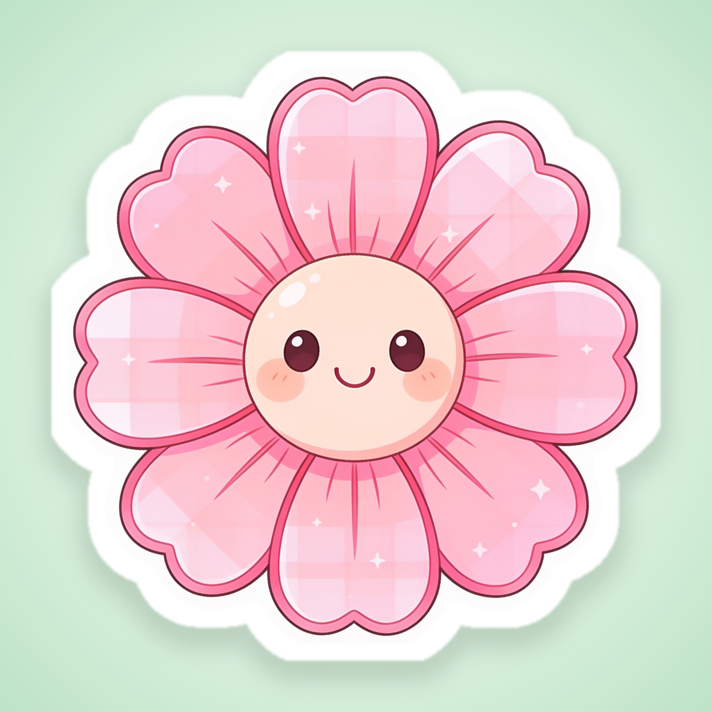
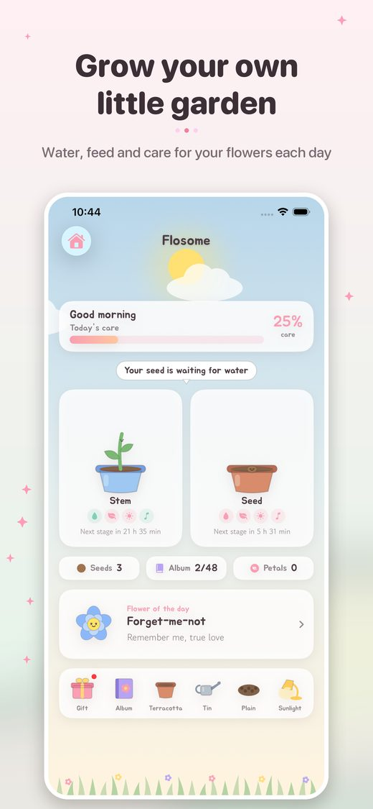
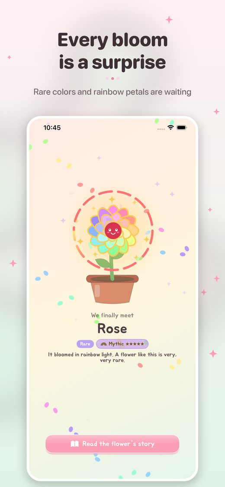
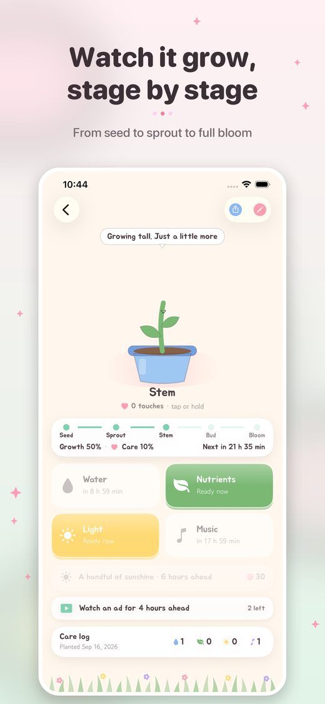

Grow a little flower garden, one bloom at a time
Get it on the App Store


Water, feed and care for your flowers each day
Rare colors and rainbow petals are waiting
From seed to sprout to full bloom
Free, with ads. No account needed.